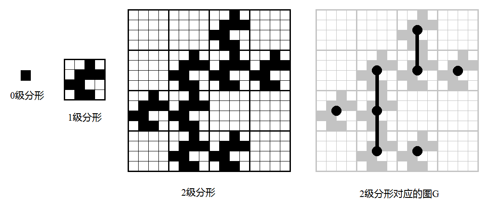

Snuke 从他的母亲那里得到了生日礼物 —— 一个网格。网格有 $H$ 行 $W$ 列。每个单元格都是黑色或白色。所有黑色单元格都是四连通的，也就是说，只做水平或垂直移动且只经过黑色单元格即可从任何黑色单元格移动到任何其他黑色单元格。
第 $i$ 行第 $j$ 列 ($1 \leq i \leq H; 1 \leq j \leq W$) 的单元格的颜色由字符 $s_{ij}$ 表示。如果 $s_{ij}$ 是 #，该单元格为黑色；如果 $s_{ij}$ 是 .，该单元格为白色。至少一个单元格是黑色的。
我们定义「分形」如下：$0$ 级分形是一个 $1 \times 1$ 的黑色单元格。$k + 1$ 级分形由 $H$ 行 $W$ 列较小一级的分形按照 Snuke 的网格的样式拼成：与 Snuke 网格中的黑色单元格对应的位置是一个 $k$ 级分形；与 Snuke 网格中的白色单元格对应的位置是一个单元格全部为白色，尺寸与 $k$ 级分形相同的网格。
您将得到 Snuke 的网格的描述和整数 $K$。请求出 $K$ 级分形中黑色单元格组成的连通分量数，模 $10^9 + 7$。
第一行包含三个非负整数 $H, W, K$ ($1 \leq H, W \leq 1000; 0 \leq K \leq 10^{18}$)，表示网格的大小和分形的级别。
接下来 $H$，每行包含一个由 # 和 . 构成的长度为 $W$ 的字符串 $s_{i, 1} s_{i, 2} \cdots s_{i, W}$，描述网格的第 $i$ 行。
保证网格中至少有一个黑色单元格，且所有的黑色单元格四连通。
输出一行一个整数，表示 $K$ 级分形中黑色单元格组成的连通分量数模 $10^9 + 7$ 的结果。
下面称一个 $1$ 级分形为「块」。
注意到在每个「块」中，所有黑色单元格均为连通的 (即它们仅构成 $1$ 个连通块)，从而我们可以进行缩点，将其 "缩" 成一个点后再与其它顶点进行讨论 (比如连通块个数)。
因此，我们下面在建图的时候，都将一个「块」看成一个顶点，如果两个「块」间存在一对相邻的黑色方格 (说明这两个「块」连通)，我们在这两个块之间连一条边。
于是，容易发现，所有的块要么是水平的，要么是竖直的。
而块与块存在水平边的充要条件是：存在 $1 \leq i \leq R$，满足 $s_{i, 1} = s_{i, C} = \texttt #$，存在竖直边的充要条件是，存在 $1 \leq j \leq C$，满足 $s_{1, j} = s_{R, j} = \texttt #$。
根据水平边和竖直边是否存在，将所有的「块」分为四大类：
既不存在水平边，也不存在竖直边。
此时 $G$ 为零图 (即 $G$ 中无边)，从而连通分量数 $=$ 点数 $= V^{K - 1}$，其中用 $V$ 来表示每个「块」中黑色单元格的个数。
既存在水平边，也存在竖直边。
此时，由每个「块」连通容易归纳证得 $G$ 连通，从而答案为 $1$。
存在竖直边，但不存在水平边。如下图：(source: https://loj.ac/article/189)
此时，$G$ 中由于只存在竖直边，因此 $G$ 无圈 $\Rightarrow G$ 为森林 (更精确地讲，$G$ 是若干条链的和)。
由森林的性质可知，森林 $F = \left( V_F, E_F \right)$ 中包含的树 (连通分量) 的个数等于 $\left| V_F \right| - \left| E_F \right|$ (还记得你们当时合成的肽链吗？)。
而 $\left| V_F \right| = V^{K - 1}$ 是显而易见的，因此我们就把问题转化为了求 $\left| E_F \right|$。
考虑通过递推 (DP) 来求 $\left| E_F \right|$。设 $k$ 级分形中的边数为 $E_k$，则边界是 $E_1 = 0$。
对于转移，考虑其中 $V$ 个子 $k - 1$ 级分形，每个 $k - 1$ 级分形中有 $E_{k-1}$ 条边，所以他们内部共有 $V \cdot E_{k-1}$ 条边。
考虑分形与分形之间的边：对于两个相邻的位置，它们之间会有若干条连边。
那么有多少个「相邻的位置」呢？由定义可知，它就等于一个「块」中竖直相邻的黑色方格对的个数，也等于 $E_2$，我们将这个数记为 $r$。
考虑每个「相邻的位置」，它又会连出几条边呢？先用 $v$ 表示满足 $s_{1, j} = s_{R, j}$ ($j \in \left[ 1, C \right]$) 的 $j$ 的个数，则这样的边数应为 $v^{k-2}$。
这是因为，我们可以在 $k - 1$ 级分形中选一个 "大块"，再在 $k - 2$ 级分形中选一个 "次大块"，……，最后在 $2$ 级分形中选一个 "小块"。
综上，$\left\{ E_n \right\}$ 满足递推式 $$ \large \color {teal} {E_k = V \cdot E_{k-1} + r \cdot v^{k-2}} \tag 1 \label 1 $$
(ps: 当然，可以通过不同的方法求得不同的递推式，如在上方链接给出的题解中的递推式为 $E_k = v \cdot E_{k-1} + r \cdot V^{k-2}$。不过，在我们待会儿求出通项之后，就殊途同归了)
至于 $K$ 很大怎么办，不难发现这个 $\eqref 1$ 式可以通过矩阵乘法进行优化，即 $$ \begin{bmatrix} E_k \\ v^{k-1} \end{bmatrix} = \begin{bmatrix} V & r \\ v & 0 \end{bmatrix} \cdot \begin{bmatrix} E_{k-1} \\ v^{k-2} \end{bmatrix} $$
于是只需要实现一个矩阵快速幂即可。
不过这种方法也太垃圾了吧，作为新时代的 OIer，我们当然要选择求出它的通项啦！
易知 $v < V$ (否则 $r = 0$ 无需计算)，我们求出 $\eqref 1$ 的不动点：$B \cdot v^k = V \cdot B \cdot v^{k-1} + r \cdot v^{k-2} \Rightarrow B = \dfrac r {v \left( v - V \right)}$。
于是，有 $E_k - B \cdot v^k = V \cdot \left( E_{k-1} - B \cdot v^{k-1} \right)$，即 $\left\{ E_n - B \cdot v^n \right\}$ 是一个以 $V$ 为公比的等比数列。
从而 $E_k = B \cdot v^k + V^{k-1} \cdot \left( E_1 - B \cdot v \right) = B \cdot v \cdot v^{k-1} - B \cdot v \cdot V^{k-1} = B \cdot v \cdot \left( v^{k-1} - V^{k-1} \right) = \dfrac {v^{k-1} - V^{k-1}} {v - V} \cdot r$。
(ps: 看！这个式子关于 $v$ 和 $V$ 是对称的呢！因此在 $\eqref 1$ 式中交换 $v$ 和 $V$ 结果当然不会变啦！)
于是，就可以使用一般的快速幂来求出 $E_K$，然后使用 $V^{K-1} - E_K$ 即得答案。
存在水平边，但不存在竖直边。
由对称性知，这种情况和 3. 等价，因此可以转化为 3 转化为求 $V, v, r$。
综上，我们得到了所有情况下连通分量个数的公式，这些公式都可以在 $O \left( H \cdot W + \log K \right)$ 时间内计算得到解。
#include <bits/stdc++.h>
typedef long long ll;
const int N = 1054, mod = 1000000007, pmod = mod - 1;
int R, C;
ll K;
char s[N][N];
inline int & reduce(int &x) {return x += x >> 31 & mod;}
inline ll & preduce(ll &x) {return x += x >> 63 & pmod;}
ll PowerMod(ll a, ll n, ll c = 1) {for (preduce(n %= pmod); n; n >>= 1, a = a * a % mod) if (n & 1) c = c * a % mod; return c;}
int main() {
int i, j, v, V = 0, r = 0, hor = 0, ver = 0, ans = 0;
scanf("%d%d%lld", &R, &C, &K), --K;
for (i = 0; i < R; ++i)
for (scanf("%s", s[i]), j = 0; j < C; ++j) V += s[i][j] &= 1;
for (i = 0; i < R; ++i) hor += s[i][0] && s[i][C - 1];
for (j = 0; j < C; ++j) ver += s[0][j] && s[R - 1][j];
if (hor && ver) return putchar(49), putchar(10), 0;
if (!(hor || ver)) return printf("%lld\n", PowerMod(V, K)), 0;
v = hor + ver;
for (i = 0; i < R; ++i)
for (j = 0; j < C; ++j)
r += s[i][j] && (hor ? s[i][j + 1] : s[i + 1][j]);
ans = PowerMod(V - v, -1, r) * (PowerMod(V, K) - PowerMod(v, K)) % mod;
printf("%d\n", reduce(ans = PowerMod(V, K) - ans));
return 0;
}
坑1：快速幂的时候注意指数类型，当然可以通过 Fermat 小定理将读入的指数先对 $mod - 1$ 取模。
坑2：注意 $V = v$ 的情况，不过此时一定有 $r = 0$，从而 $E_k = 0$ 不影响计算。